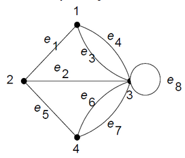

Multigraph adalah graph yang memungkinkan adanya:

Multigraph sering digunakan dalam berbagai aplikasi:
Apa yang membedakan multigraph dari graph sederhana?
Manakah yang merupakan contoh penerapan multigraph dalam kehidupan sehari-hari?